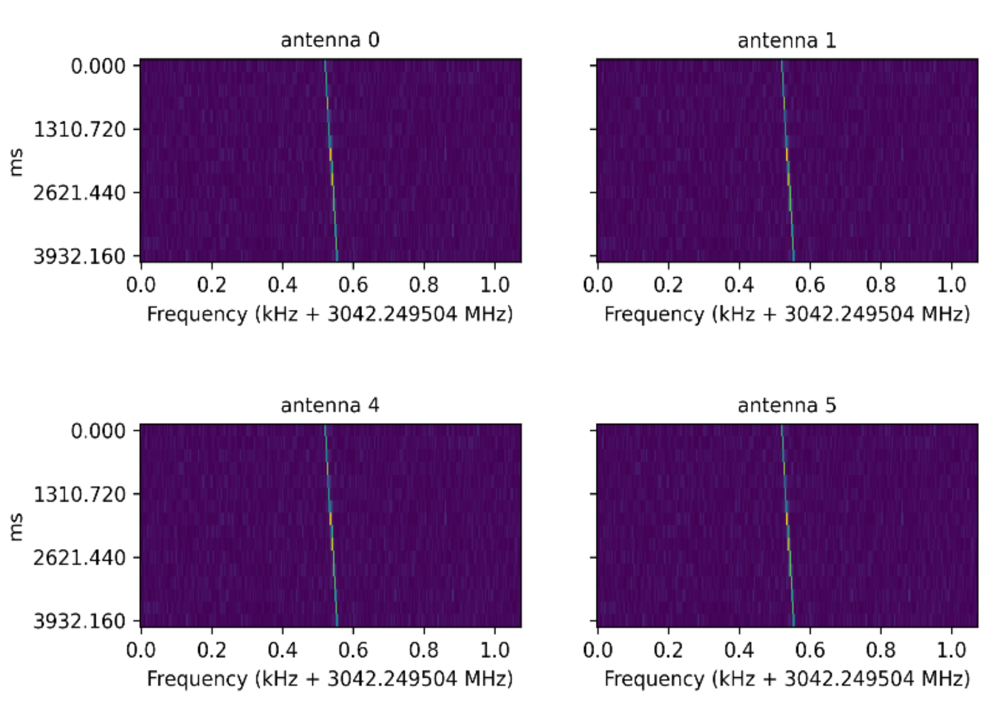
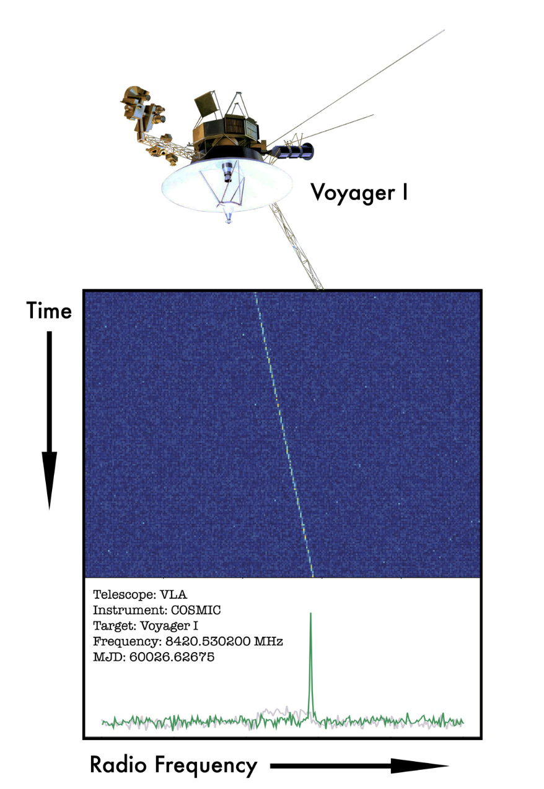

Overview
- Developed various tools to test and commission the digital signal processing software of an innovative compute cluster, COSMIC, which can process 3 TB/s of continuously streaming time series data from 27 radio telescopes to look for alien signals.
- COSMIC is a big compute infrastructure hosted at the VLA radio telescope site in New Mexico consisting of 26 GPU servers and 3 FPGA Servers.
- Testing and validating the raw voltage time series data and the image data from the observing system. Developed software to calibrate the data and verify different signal processing methods.
- The VLA COSMIC repository contains the Python tools developed to commission the COSMIC system.
Data Collection
- Time series data in the form of voltages are collected in realtime from multiple radio telescopes. The high incoming data rate of 3TB/s requires building pipelines which need to process the data in real-time or quasi-realtime.
- Incoming data stream is split into multiple bandwidths and 5 minutes of data chunks are stored in multiple parallel GPU servers hosting NVME Cards. The time series data is stored in a format called Guppi raw files. (with header and data in multiple blocks)
Data Preprocessing
- A short time fourier transform (STFT) of the time series data from a single antenna element is carried out to create spectrograms, which is a 2D array in time and frequency.
- The length of the STFT decides the size of the time steps and frequency channels. Further these spectrograms undergo a cross correlation process as well as an addition process.
- The cross-correlation process is carried out for each pair of antennas resulting n*(n-1)/2 values and an inverse FFT will generate a sky image.
- The spectrograms from all the antennas can be added in phase to enhance sensitivity towards a particular direction in the sky. This is helpful to observe any particular astronomical sources.
SETI Signal Search
- In this work, we search for a linearly drifting signal with narrow bandwidth (~ few Hz) in the spectrogram.
- Below is an example of such a signal in the spectrogram from multiple antennas. X axis has the frequency information in megahertz and Y axis has the time information in milliseconds. We can clearly see the signal frequency is slowly changing over time.
- Dedrifting of signal using a range of trial drift rate (how much frequency as function of time) values is used to find such signals. turboseti python package is used to find such signals.
- Once the signal is found, the corresponding signal information and spectrogram from all elements are saved into a MySQL database.
- From January 2023 onwards, COSMIC is actively searching for alien signals in this universe. Below is an example detection of the so-called alien signal detected from Voyager space probe, the furthest artificial object that we know of at 15 billion miles from Earth.


Machine Learning Classification of SETI candidates
The COSMIC MySQL database currently have millions of SETI candidates and most of them are false positives arising from radio signal interference and instrumental effects. I am currently working on an unsupervised machine learning approach to classify the SETI candidates. The approach includes:
- SQL queries to collect candidate data from the SQL database.
- Extraction of different signal characteristics of a technosignature from 100,000 candidates.
- Dimension reduction of the extracted features using techniques like principal component analysis (PCA) and t-SNE.
- Clustering of the reduced dimensions using K-means clustering to understand different classes of signals.
Results
Works is still in progress
Checkout this press release and publication to know more about COSMIC.